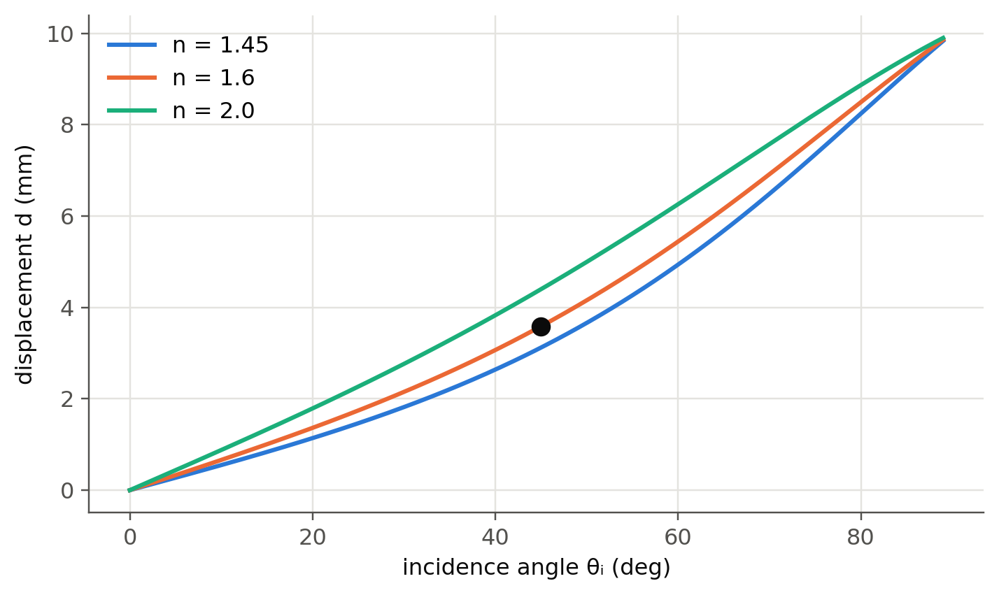
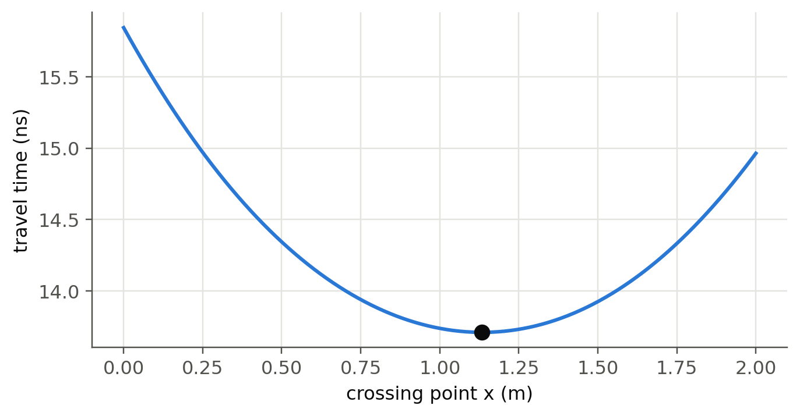

6 Snell’s law, total internal reflection and Fermat’s principle
 Run this chapter’s code in Google Colab (no installation).
Run this chapter’s code in Google Colab (no installation).
Slides 85–100 (Snell–Descartes law from phase matching, critical angle, total internal reflection, prisms, lateral displacement, light guiding in fibers and water jets) and slides 296–299 (Fermat’s principle).
6.1 Key relations
At a boundary, the incident, reflected and transmitted waves must stay in phase along the interface. This gives \(\theta_r=\theta_i\) (slide 88) and, because the wavefront travels \(v_1\Delta t\) in medium 1 while it travels \(v_2\Delta t\) in medium 2, Snell’s law (slides 89–90):
\[ n_1\sin\theta_i=n_2\sin\theta_t ,\qquad \sin\theta_c=\frac{n_2}{n_1}\quad(n_1>n_2). \]
Beyond the critical angle there is no transmitted wave: total internal reflection (TIR, slides 91–93), with an evanescent field in medium 2 (Chapter 7). Snell’s law is equivalent to conservation of the tangential wave vector, \(k_1\sin\theta_i=k_2\sin\theta_t\).
6.1.1 Refraction and TIR, live
6.2 Worked example: lateral displacement through a plate (slides 95–98)
Find the lateral displacement \(d\) of a beam crossing a glass plate of index \(n=1.600\) and thickness \(L=10\) mm at 45°.
The emerging beam is parallel to the incident one but shifted by
\[ d=L\sin\theta_i\left[1-\frac{\cos\theta_i}{\sqrt{n^2-\sin^2\theta_i}}\right]. \]
Show the Python
th = np.radians(np.linspace(0, 89, 300))
fig, ax = plt.subplots()
for k, n_ in enumerate((1.45, 1.6, 2.0)):
ax.plot(np.degrees(th), ol.lateral_displacement(10e-3, n_, th)*1e3, color=ol.PALETTE[k], label=f"n = {n_}")
d45 = ol.lateral_displacement(10e-3, 1.6, np.radians(45))
ax.plot(45, d45*1e3, "o", color=ol.INK, ms=8)
ax.set(xlabel="incidence angle θᵢ (deg)", ylabel="displacement d (mm)"); ax.legend()
plt.show()
print(f"Slide 98: d = {d45*1e3:.3f} mm")
Slide 98: d = 3.587 mmTilted plane-parallel plates are used as fine beam steerers in fiber-coupling setups: a small tilt gives a precise, small shift.
Show the Python
for ti_deg in (5, 10, 20):
print(f"1 mm glass plate (n = 1.5) tilted {ti_deg:2d}° -> lateral shift {ol.lateral_displacement(1e-3, 1.5, np.radians(ti_deg))*1e6:6.1f} µm")1 mm glass plate (n = 1.5) tilted 5° -> lateral shift 29.2 µm
1 mm glass plate (n = 1.5) tilted 10° -> lateral shift 58.9 µm
1 mm glass plate (n = 1.5) tilted 20° -> lateral shift 122.0 µm6.3 Worked example: acceptance angle of a fiber (slide 99)
TIR at the core–cladding interface only guides rays inside an acceptance cone, \(\mathrm{NA}=n_0\sin\theta_a=\sqrt{n_1^2-n_2^2}\) (more in Chapter 2).
Show the Python
for name, n1, n2 in (("SMF-28-like (Δ ≈ 0.36 %)", 1.4504, 1.4447),
("multimode POF (PMMA)", 1.49, 1.41),
("water jet in air (slide 100)", 1.33, 1.00)):
NA = min(np.sqrt(n1**2 - n2**2), 1.0)
print(f"{name:28s} θc = {np.degrees(np.arcsin(n2/n1)):.2f}°, NA = {NA:.3f}, "
f"acceptance half-angle = {np.degrees(np.arcsin(NA)):.1f}°")SMF-28-like (Δ ≈ 0.36 %) θc = 84.92°, NA = 0.128, acceptance half-angle = 7.4°
multimode POF (PMMA) θc = 71.14°, NA = 0.482, acceptance half-angle = 28.8°
water jet in air (slide 100) θc = 48.75°, NA = 0.877, acceptance half-angle = 61.3°The indices of the SMF-like fiber are representative values chosen to give NA ≈ 0.13. Check the datasheet of the fiber used in the lab.
6.4 Worked example: Snell’s law from Fermat’s principle (slides 296–299)
Light travelling from A to B takes the path of least time. Minimise the travel time across an interface numerically and check that the optimum satisfies \(n_1\sin\theta_1=n_2\sin\theta_2\):
Show the Python
n1, n2 = 1.0, 1.5
A, B = (0.0, 1.0), (2.0, -1.5)
t = lambda x: (n1*np.hypot(x - A[0], A[1]) + n2*np.hypot(B[0] - x, B[1])) / c0
x_opt = optimize.minimize_scalar(t, bounds=(A[0], B[0]), method="bounded").x
th1 = np.arctan2(x_opt - A[0], A[1]); th2 = np.arctan2(B[0] - x_opt, -B[1])
xs = np.linspace(0, 2, 300)
fig, ax = plt.subplots(figsize=(7, 3.4))
ax.plot(xs, t(xs)*1e9); ax.plot(x_opt, t(x_opt)*1e9, "o", color=ol.INK, ms=8)
ax.set(xlabel="crossing point x (m)", ylabel="travel time (ns)"); plt.show()
print(f"n1 sinθ1 = {n1*np.sin(th1):.6f}, n2 sinθ2 = {n2*np.sin(th2):.6f}")
n1 sinθ1 = 0.750016, n2 sinθ2 = 0.750016
TipGoing deeper
- Fermat’s principle is a stationary-time principle, not always a minimum. Find a geometry (for example an elliptical mirror) where the actual path is a maximum.
- Snell’s law is conservation of the tangential wave vector \(k_\parallel\). Use this viewpoint to derive the grating equation
- and the phase-matching condition of a grating coupler.
- Generalised Snell’s law for metasurfaces: a phase gradient \(d\phi/dx\) at the interface adds to \(k_\parallel\) (Yu et al., Science 334, 333 (2011)).
- Ray optics in graded-index media: the eikonal equation. How do GRIN lenses and graded-index fibers follow from it? (Chapter 2.)
NoteComplements
- Hecht, Optics: chapter on the propagation of light (Fermat, Snell, TIR) with many experimental photographs.
- Saleh & Teich: chapter “Ray Optics” (graded-index optics, matrix optics).
6.5 Try it yourself
- A light ray goes from water (\(n=1.33\)) to air. Above which angle is it trapped? How does this explain the “Snell’s window” seen by a diver?
- Compute the deviation of a ray through a 60° prism of \(n=1.5\) (slide 94) as a function of the incidence angle, and find the minimum deviation.
- Show that the lateral displacement formula reduces to \(d\approx L\theta_i(n-1)/n\) for small angles.